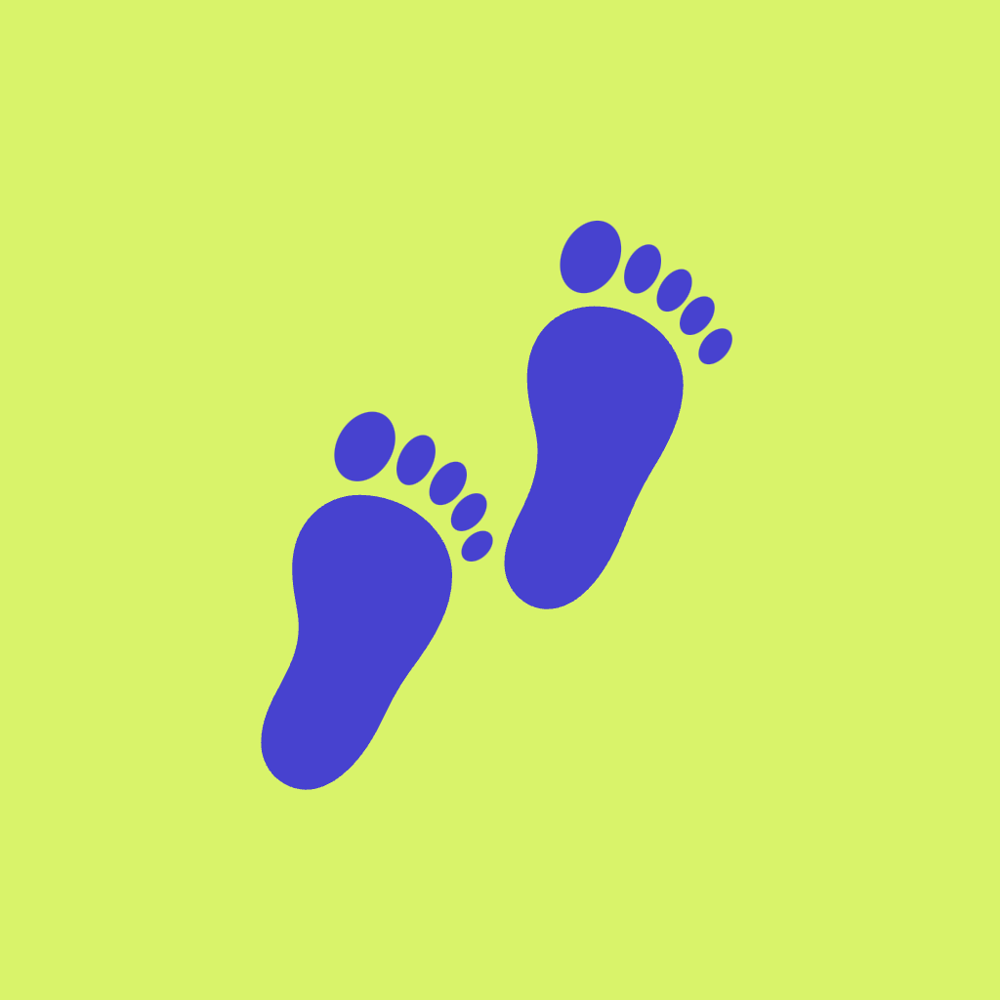

Move together.
Seruen is a small, private activity circle. Share steps and workouts with the handful of people you actually care about, cheer each other on, and keep the streak alive.
What it does
- Counts your steps automatically, from Apple Health or Health Connect.
- Shows your circle how everyone is doing today — and nothing more than that.
- Lets you send encouragement that never mentions a number or a ranking.
- Keeps a streak that rewards showing up rather than intensity.
What it doesn't do
- No advertising, no analytics, no trackers of any kind.
- No weight, heart rate, sleep or anything clinical — not even requested.
- Nothing is visible outside the circles you choose to join.
Privacy
Everything Seruen stores, who can see it, and how to export or delete it is written out in full.
Read the privacy policy